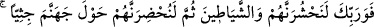
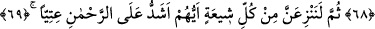
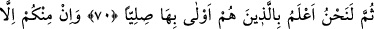
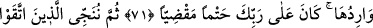
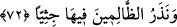
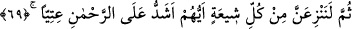

MUTTAKÎLERİN CEHENNEM
ATEŞİNDEN KURTULMALARI
68. Rabb’ine andolsun ki, onları ve şeytanları mutlaka toplayacağız, sonra onları
diz çökmüş vaziyette cehennemin çevresinde bulunduracağız.
69. Sonra her milletten Rahmân’a en çok karşı geleni ayıracağız.
70. Sonra, elbette biz, kimlerin oraya gitmeye daha çok müstahak olduğunu daha
iyi biliriz.
71. İçinizden oraya gitmeyecek hiç kimse yoktur. Bu, Rabb’inin üzerine aldığı
kesin (elbette yerine getirilmesi gereken) borçtur.
72. Sonra muttakîleri kurtarırız ve zâlimleri öylece diz üstü çökmüş olarak orada
bırakırız.
“Rabb’ine andolsun ki,” kıyâmet günü “onları” yani öldükten sonra dirilmeyi inkâr
edenleri yeryüzünden çıkardıktan (öldürdükten) sonra mahşere sevk edip diri olarak
toplayacağız. “Ve şeytanları toplayacağız” yani onlara vesvese veren şeytanları da
onlarla beraber toplayacağız. Çünkü her kâfir bir dizi halinde şeytanı ile zincire
vurulmuş olarak haşrolunacaktır. “Sonra onları diz çökmüş vaziyette cehennemin
çevresinde bulunduracağız.” Yâni onlar, gördükleri durumun şiddetinden dolayı ayakta
durmaya güç yetiremedikleri için diz üstü oturacaklar. İbn Abbas (r.anhümâ)’dan
rivâyete göre “__WORD__” topluluklar hâlinde demektir. Buna göre mânâ: ‘Sonra onları
topluluklar hâlinde cehennemin çevresinde bulunduracağız.’ şeklinde olur. Celâleyn
Tefsîri’nde de bu görüş tercih edilmiştir.
69. Sonra her milletten Rahmân’a en çok karşı geleni ayıracağız.
“Sonra her milletten” her ümmet ve fırkadan “Rahmân’a” serkeşlik ve cür’et